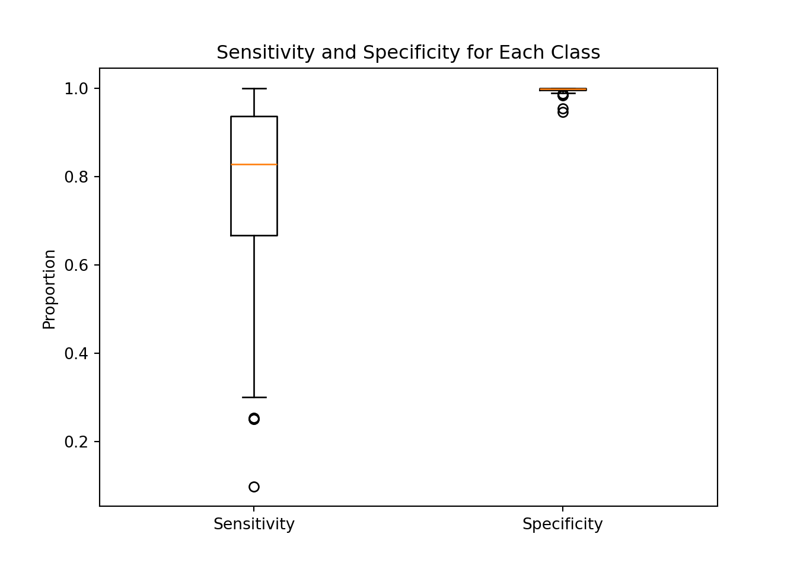
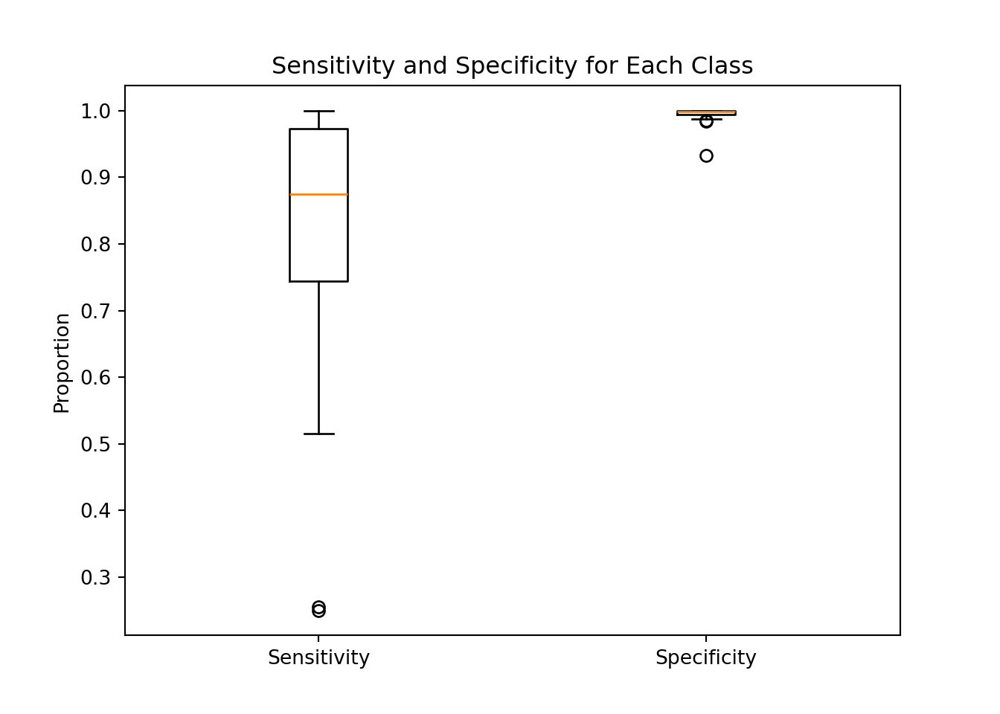
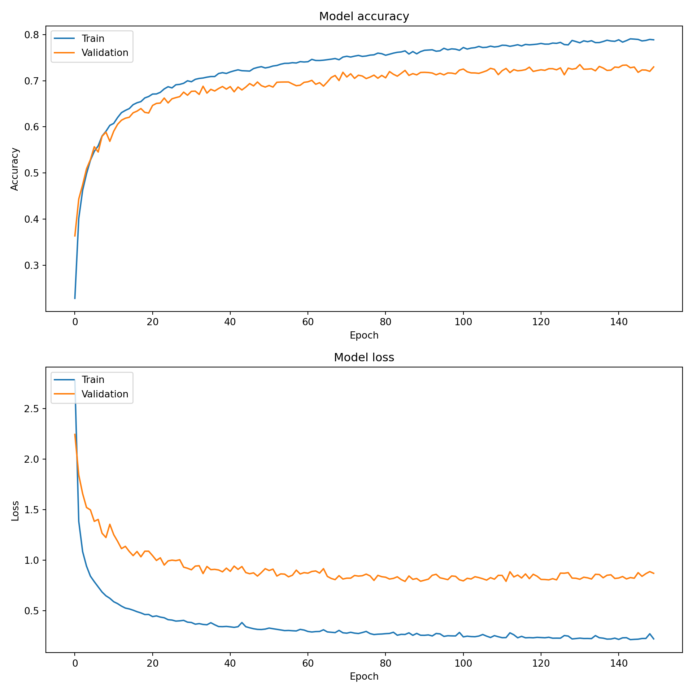
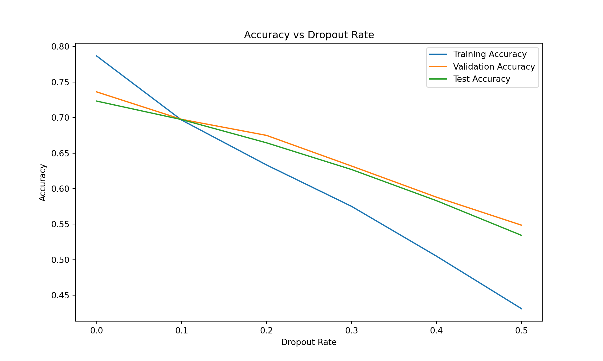
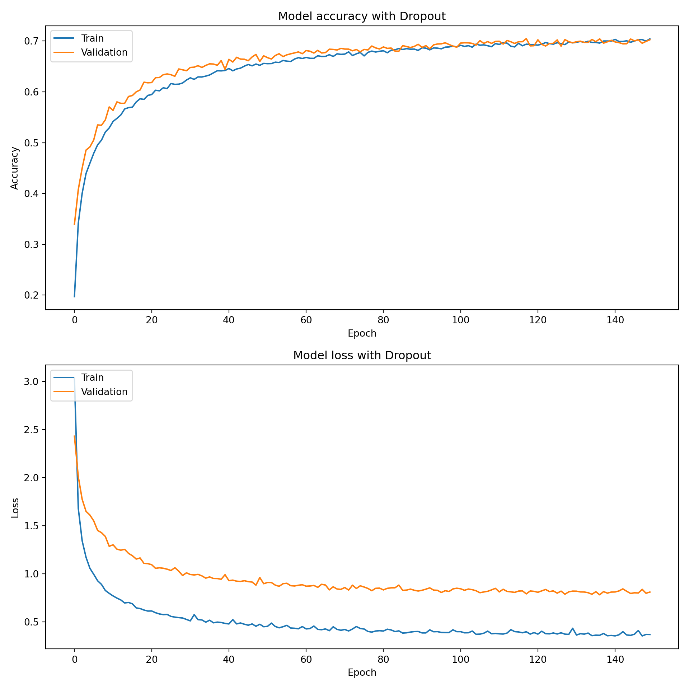

# Base neural network model
model_base = Sequential([
Input(shape = (X_train.shape[1],)),
Dense(128, activation = 'relu'),
Dense(64, activation = 'relu'),
Dense(y_train.shape[1], activation = 'softmax')])Neural Networks
In this section, we will build a neural network model to predict the make of a car based on the features at our disposal. We will preprocess the data, split it into training and testing sets, define the neural network architecture, compile the model, train it and evaluate its performance.
Preprocessing and splitting the data
The dataset contains different types of data. Some columns are numerical (like “city_mpg_fuel_type_1” or “charge_time_240v”), and some are categorical (“vehicle_class” or “fuel_type”). We identify and differentiate these two types of columns, subsequently preprocessing them accordingly.
The data is split into a training set and a testing set. The training set is used to train the model, and the testing set is used to evaluate its performance. This split ensures that we can test how well the model generalizes to new, unseen data.
Building the neural network models and training them
Base Neural Network
We chose to use a neural network. This neural network consists of layers of neurons, where each layer applies transformations to the data. The first layer takes the input features. Then some Hidden layers help the model learn complex patterns. In the end, the output layer predicts the probability of each car manufacturer. The first layer, the input layer, takes the preprocessed input features. The second layer is set to 128 neurons, the third to 64 neurons and the last layer, the output layer, has as many neurons as there are car manufacturers (66 in our case). The activation function used in the hidden layers is the Rectified Linear Unit (ReLU), and the output layer uses the Softmax activation function. The model is compiled with the Adam optimizer and the categorical cross-entropy loss function.
We used activation functions in the hidden layers to introduce non-linearity into the model. The ReLU activation function is used in the hidden layers because it is computationally efficient and helps the model learn complex patterns in the data. The Softmax activation function is used in the output layer because it converts the model’s raw output into probabilities that sum to one. This allows us to interpret the model’s output as the probability of each car manufacturer.
We used the following hyperparameters for the base model (non-exhaustive list):
- epochs: 150 (Corresponds to the number of times the model sees the entire dataset during training.)
- batch_size: 32 (Corresponds to the number of samples that the model processes before updating the weights.)
- validation_split: 0.2 (Corresponds to the fraction of the training data to be used as validation data.)
The model is trained for 150 epochs with a batch size of 32. The validation split is set to 0.2, which means that 20% of the training data is kept to be used as a validation set.
Overall, the model performs well but we haven’t dealt with the issue of unbalanced classes yet. Let’s have a look at the distribution of the sensitivity and specificity for each class.
Issue of unbalanced classes
The issue of unbalanced classes, as explained previously, can highly weaken the model ability to generalize to new data. The model will automatically prefer to predict the most frequent classes. We can see in the boxplots below the distribution of the sensitivity and specificity for the classes. Even though, we already dealt in part with the unbalanced class during the cleaning process, as seen in the plot in section ?@sec-make_n_plot, there are still big differences between the classes.
{'whiskers': [<matplotlib.lines.Line2D object at 0x3423ce540>, <matplotlib.lines.Line2D object at 0x369c0a930>, <matplotlib.lines.Line2D object at 0x369c0a330>, <matplotlib.lines.Line2D object at 0x369c0b020>], 'caps': [<matplotlib.lines.Line2D object at 0x369c09790>, <matplotlib.lines.Line2D object at 0x369c09d00>, <matplotlib.lines.Line2D object at 0x369c0a750>, <matplotlib.lines.Line2D object at 0x369c0ac90>], 'boxes': [<matplotlib.lines.Line2D object at 0x369253500>, <matplotlib.lines.Line2D object at 0x369c08710>], 'medians': [<matplotlib.lines.Line2D object at 0x369c09e50>, <matplotlib.lines.Line2D object at 0x369c0bd10>], 'fliers': [<matplotlib.lines.Line2D object at 0x369c08bc0>, <matplotlib.lines.Line2D object at 0x369cb00b0>], 'means': []}
By examining the boxplot representing the distribution of sensitivity and specificity across the classes, we observe clear evidence of class imbalance. Sensitivity and specificity are not consistent across the classes. Specificity, which measures how well the model identifies true negatives, is very high for every class. This indicates that the model is effective at detecting instances that do not belong to a given class. However, sensitivity, which measures the true positive rate and reflects how well the model correctly predicts the make of a car for a specific brand, is not as high. This suggests that the model is not performing well for all classes.
For some classes with more vehicle models, the model tends to predict those classes more frequently, leading to higher accuracy but lower sensitivity for rarer classes. To address this issue, we will use class weights to ensure the model performs more evenly across all classes.
Adding class weights to the model
This technique, detailed in the methods section, essentially penalizes the model more for misclassifying the minority class than the majority class. By doing so, the model is encouraged to learn the patterns of the minority class more effectively, thereby enhancing its performance on the test set.
{'whiskers': [<matplotlib.lines.Line2D object at 0x38f04a6f0>, <matplotlib.lines.Line2D object at 0x38f048380>, <matplotlib.lines.Line2D object at 0x38f048a70>, <matplotlib.lines.Line2D object at 0x38f049ca0>], 'caps': [<matplotlib.lines.Line2D object at 0x38f048860>, <matplotlib.lines.Line2D object at 0x38f048c80>, <matplotlib.lines.Line2D object at 0x38f048e60>, <matplotlib.lines.Line2D object at 0x38f049df0>], 'boxes': [<matplotlib.lines.Line2D object at 0x38f049580>, <matplotlib.lines.Line2D object at 0x38f049760>], 'medians': [<matplotlib.lines.Line2D object at 0x38f049460>, <matplotlib.lines.Line2D object at 0x38f04a8a0>], 'fliers': [<matplotlib.lines.Line2D object at 0x38f049700>, <matplotlib.lines.Line2D object at 0x38f04ac60>], 'means': []}
As we can see the model is taking better care of the minority classes and overall the sensitivity is higher across the classes. The sensitivity and specificity are more consistent across the classes. The model is better at generalizing to new data. In our case, this method does not eliminate completely the issue of unbalanced classes. Given the structure of our data and the discrepancy of our classes, we will use this technique for the following neural networks and move on.
Model performance
We can now look at the evolution of the accuracy of our model during the training process with the following plot.

As we can see, at each epoch, the accuracy is increasing and the loss is decreasing. The model is learning from the training data and improving its predictions.
But, in the end, we have a case of overfitting. The model performs well on the training data but not as well on the testing data. This is an issue because it limits the possibility of generalizing the model to new data.
Performance of the model with weighted class:
Final Training Accuracy: 78.86%Final Validation Accuracy: 72.99%Test Set Accuracy: 72.32%Overall, the performance of the model is still good. However the quality can be improved. To address the issue of overfitting, we will introduce Dropout layers in the neural network.
Neural Network with Dropout layers
Dropout layers randomly set a fraction of neurons to zero during training, which helps prevent overfitting by forcing the model to learn more robust features. We will tune the dropout rates to find the optimal value that balances training and validation accuracy and that insure to reduce overfitting.
We used the following hyperparameters (non-exhaustive list):
- epochs: 150 (Corresponds to the number of times the model sees the entire dataset during training.)
- batch_size: 32 (Corresponds to the number of samples that the model processes before updating the weights.)
- validation_split: 0.2 (Corresponds to the fraction of the training data to be used as validation data.)
- dropout_rate: varies (Corresponds to the fraction of neurons to drop during training.)
We will try 5 different dropout rates in addition of the case of no dropout. We will train the model with each dropout rate and evaluate its performance on the validation and test sets. We will then plot the training, validation, and test accuracies for each dropout rate to find the optimal value.
# Model with Dropout layers
def create_model(dropout_rate = 0.0):
model = Sequential([
Input(shape = (X_train.shape[1],)),
Dense(128, activation = 'relu'),
Dropout(dropout_rate),
Dense(64, activation = 'relu'),
Dropout(dropout_rate),
Dense(y_train.shape[1], activation = 'softmax')
])
model.compile(optimizer = Adam(), loss = 'categorical_crossentropy', metrics = ['accuracy'])
return modelSelection of the best dropout rate

We can see that the model with a dropout rate of 0.1 has the best balance between reducing drastically the overfitting problem and keeping a good overall accuracy. This model has a good balance between training and validation accuracy, and it generalizes well to new data. It also eliminate the overfitting issue. We will use this dropout rate of 0.1 to train the final model that utilize class weights and dropout layers.
Model performance

We see that the model with dropout layers performs better that the one without it. We reached a better accuracy on the validation set and the model is clearly not overfitting as much. It is interesting to note that the validation accuracy is higher than the training accuracy. This is a good sign that the model is generalizing well to new data. It is also interesting to note that, as predicted, we see that the validation accuracy is higher than the training accuracy. This is due to the way dropout layers work. The model does not need early stopping in our case (150 epochs) since the accuracies are not decreasing and the loss is not increasing.
Performance of the model with weighted class and dropout layers:
Final Training Accuracy: 70.43%Final Validation Accuracy: 70.25%Test Set Accuracy: 69.67%The final accuracy of our model is not as great as we had with our first model but the model that we are using is at least better at representing the data and generalizing to new data. We also computed the Cohen’s Kappa score which is a good indicator of the model’s performance. And as we can see, the model performs well.
Cohen's Kappa Score: 69.16%